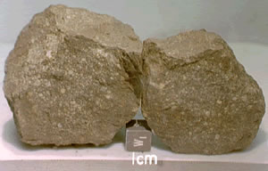
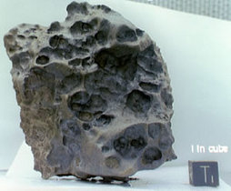
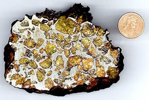

If an incoming meteoroid survives its passage through the atmosphere as a meteor and actually impacts the Earth, it is known as a ‘meteorite’. Of the several thousand tonnes of interplanetary debris to enter the Earth’s atmosphere every day, only about 1 tonne makes it to the Earth’s surface, and the majority of this is in the form of microscopic dust particles. In particular, objects smaller than 10-6 m are slowed by collisions with molecules in the upper atmosphere to a degree where ablation does not occur during their fall to Earth. These land as micrometeorites.
Meteorites (which can measure metres across), are mostly fragments of asteroids and can be traced back to the different classes of asteroids that exist in the main asteroid belt. Their survival through the atmosphere depends on their initial mass, composition and speed of entry, and their superheated arrival means that they are typically smooth and encased in a black ‘fusion crust’.
Meteorites are classified according to their composition and whether their parent body was differentiated or not. The three primary classes are:
- Stony meteorites are primarily composed of silicates, but up to 25% of their mass can come from iron and nickel. They make up about 95% of all the meteorites known to have fallen to Earth, and can be differentiated (achondrites) or non-differentiated (chondrites). Chondrites are particularly interesting as they appear to have experienced very little change since their formation in the early Solar System.
- Iron meteorites are composed of iron and nickel and are thought to originate from the cores of differentiated asteroids. They are relatively easy to find since they look very different to normal rocks, and their metallic composition makes them extremely heavy and resistant to erosion. They are also usually larger than other meteorite types since they are less affected by ablation during their passage through the atmosphere. This is reflected in the statistic that although iron meteorites make up only 4% of the meteorites witnessed falling to Earth, they account for almost 20% of all of the meteorites found.
- Stony-iron meteorites are roughly equal parts silicate and iron-nickel by mass. They account for only about 1% of the meteorites known to have fallen to Earth and also originate from differentiated asteroids.
|

A chondritic meteorite discovered in Antarctica.
Credit: NASA/JPL |
The largest meteorite ever discovered weighs 60 tonnes and was found in Namibia. However, meteorites much larger than this have impacted the Earth and vapourised as they formed meteor craters. The most famous is the Barringer Crater located near Winslow, Arizona. It is thought that this 1,200 m diameter, 200 m deep crater was formed about 50,000 years ago by a meteorite measuring about 50 m across and weighing of order 300,000 tonnes. |
|

An iron meteorite discovered in Antarctica. Irons look very different to normal rocks which aids in their discovery.
Credit: NASA/JPL |

A stony-iron meteorite.
Credit: (c)1999, Ron Hipschman, Exploratorium |